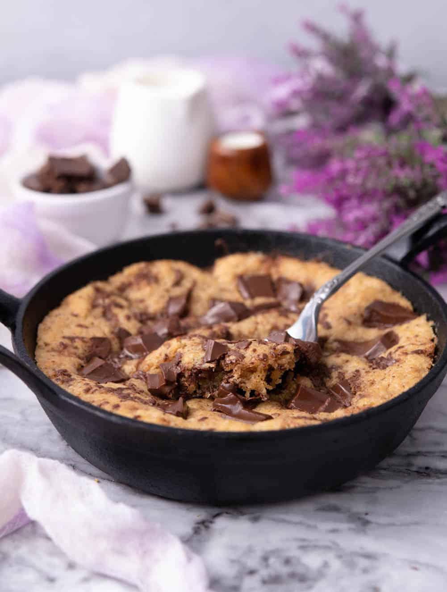

Hot Cookie Dough

Description:
My favorite desert for the perfect movie night!
More delicious and easier to prepare
than cookies.
It's recommended to use chocolate bars over small chocolate chips.
It's usually served with vanilla/chocolate ice-cream.
You can add other ingredients of your choice.
Ingredients
- 1/2 cup butter, softened
- 1 cup brown sugar
- 1 egg
- 1 tsp vanilla extract
- 1 3/4 cup flour
- 1 tsp baking powder
- 1 cup chopped chocolate
- 1 pinch of salt
Steps:
- Preheat oven to 180 °C.
- Brown the butter: melt the butter in a cast iron skillet.
Continue cooking until golden-brown.
- Place the brown butter in a bowl. Pour golden-brown sugar
over the butter and beat until smooth.
- Add egg and vanilla.
- Add flour and baking powder. Stir until the dough
just comes together.
- Fold in half the chopped chocolate. Transfer the cookie dough
into the skillet. Top with remaining chocolate.
- Bake for 20 minutes or until the edges are brown.
- Serve cookie warm.
NB: This recipe was taken from Foods Guy Website